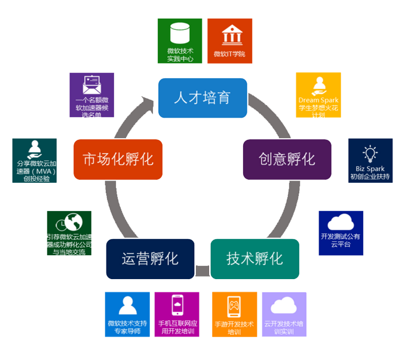

项目愿景
微软期许与全国微软“云暨移动技术孵化计划”合作伙伴，携手打造以创新驱动的创新生态，在中国双创、中国制造2025、一带一路、工业4.0背景下，各个行业积极连动，打造创新驱动带动数字化转型的变革。
合作目标
微软与政府双方在平等互利、互动互惠的前提下，与政府及政府指定孵化中心运营商合作，确定将在人才培养、产业孵化、合作项目基础云平台建设等领域展开全面合作，推动互联网+ 与创新/创业深度融合。
通过IT人才培养、产业孵化、中小企业服务推动基于应用经济的现代服务业；按照“做出特色、形成示范、走在前列”的总体布局，通过本合作计划，将落地高新区或经开区建设成为领先的智慧城市示范区，最终建成服务全国、辐射全球的“创新孵化加速”示范园区。
针对孵化加速器全方位的支持与落地
合作模式
本计划在落地及实施需要政府、孵化中心运营商、以及微软三个重要角色
政府：负责初期的资金投入、政策支持、以及孵化中心所需云计算及开发测试平台建立。
孵化中心运营商：负责孵化器的运营，以及市场推广。
微软（中国）有限公司：技术培训与指导，孵化平台交流机会。
孵化中心和政府各自的角色
微软云暨移动技术孵化成员计划，就是微软与政府合作一起建立类似中国好声音的”互联网+”的孵化平台。孵化中心就好像是中国好声音的主办平台，负责整个营销平台的推广，以及海选、招募。而政府就像是中国好声音的拥有者，负责推广并且吸引更多的广告资金投入，并且与行业客户、风投资源对接, 让具有高素质，及专业的人才，有市场创新创业的机会。
政府的角色是提供，政策奖励配套，并且编列预算资金做初期投入，带动并且创造更优化的孵化生态，让孵化中心能够专注，专业技术孵化、运营孵化，以及未来推动市场化孵化。
微软的角色及计划
而微软的角色就是扮演中国好声音导师的身份，提供最全球先进高端的云计算及移动技术技术的培训指导，并且提供孵化周期所需要的技术支持，并且配有专属的技术导师对接窗口，让初创企业在技术及运营模式创新时，提供加值又加速的服务。
如何让孵化中心能够在预期的时间内，达成运营自主运营并且市场化，常常是政府的一项挑战。根据这个需求，微软将计划采用中国颇具盛名的微软加速器(MA)成功技术孵化经验，微软加速器是目前外企在中国投入创新创业孵化最成功的案例。微软只会针对本计划的成员，透过经验分享以及交流，加速孵化中心成功，创造更丰富的、优化的孵化生态环境，达到互联网+ 创新创业 的目标。
创新驱动
项目收益
利用微软创新生态及品牌效益获得产业发展机遇
互联网创新力即是产业发展的核心竞争力，是推动产业结构优化，促进信息产业、与传统产业转型的重要动力。充分利用微软（中国）公司在全球的影响力和广泛的资源，吸收国际上的先进技术和成功经验，针对中国互联网 特别是移动互联网产业的实际情况，在创建全球化、全方位、开放的创新基地，这对项目落地市/区的移动互联网、智慧城市建设及产业数字转型都将是一个难得的发展机遇。
微软在推动双创的战略布局，非常重新创新生态的健康发展，微软每年都追踪公正第三方的一项统计指标,这个指针显示微软在当地每赚一块钱，其生态内的合作伙伴会赚 16块以上营收。
政府与微软共同投入打造创新生态系统，聚集产业
产业数字化转型需要上游的创新企业经过孵化、投资、加速等过程后，将迅速成长，并形成聚合效应。微软在中国 有非常强大的合作伙伴生态系统，能够支撑产业数字化转型所需要的解决方案、技术转移及服务交付。透过微软全 球及本地的合作伙伴生态系统，吸引大批研发公司、技术服务商、投资者，以及硬设备公司、管道销售和其他产业链相关的国际和国内公司都将聚拢，追随创新潮流，分享中国互联网创新给全球市场带来的巨大商机。尤其是与云 及互联网结合人工智能开发相关的行业，如物联网、车联网、智能城市、大数据分析应用、智能医疗、精准医疗、结合一带一路特有的文化创意、工艺设计、虚拟现实、动画制作、市场推广等，都将聚集在这里，形成紧密合作的 创新生态系统。
创新产业将为社会和政府持续创造经济效益
每个城市都有其特色产业以及支柱产业，而创新力才是让产业具有可持续蓬勃发展的竞争能力。微软每年投入超过 300 亿美金的研发经费，持续针对全球各行业数字化转型所需要的核心技术及创新技术，这些前沿科技，提供产业数 字化转型所需要的技术支撑。微软合作伙伴以及解决方案提供商，不需要投入资源，研发微软早已研发出来的前沿科技，可以站在巨人的肩膀上，针对行业特殊性需求的创新。 微软-云暨移动技术孵化计划，是依托于微软与政府的战略合作基础，因此，基于政府战略合作的前提，微软愿意将投入巨大研发资源的前沿科技，进行部分的技术支持及对接，例如，微软研究院所研发的空气质量监控的大数据模型，已经在其他合作项目中，进行复制或对接。例如:针对一带一路特有场景，微软早已经研发完成跨国跨境其实多语言视频沟通平台(SKYPE translator,多跨国跨境其实多语言视频沟通平台)，这些平台技术，再结合基于人工智能、深入学习的云计算及大数据平台，将能迅速与产业数字化转型需求对接。
微软将持续扩大投入资源，加速推动全国微软-云暨移动技术孵化计划的合作伙伴及项目形成创新生态体系，建立交流学习平台，结合当地高校资源及人才培育推动，形成完整可持续的创新体系。将为当地的特色及支柱产业，形成强大的创新能量，进而推动支柱产业数字化转型，创造可持续的经济效益。
项目价值
助力地方政府构建国际级“创新孵化加速中心”
作为全球最大软件公司的在华全资子公司，微软(中国)和地方政府通过开展战略合作，发挥微软品牌、技术、平台的号召力和凝聚力，结合政府的各项扶持和培育政策，借助运营商的运营管理，以“云暨移动技术孵化计划”为依托，以移动互联网的产业作为核心合作主题，打造一个能够真正吸引创业者的创业孵化基地，致力于区域政府打造成一流的创新、创业、创投、创客“四创联动”的新型发展生态圈。
全球正处于创新创业的新起点，中国以外国家的初创企业，都看到中国蓬勃发展的商机，都愿意来中国合作落地，而同时，国内的初创企业也急需能够跟全球创新生态、风投资源接轨。微软在全球的创新生态布局优势及拥有世界五百 强客户群，微软将可以扮演中国与全球非常重要的创新、创业生态的对接桥梁!
帮助初创企业和创新项目快速成长与加速发展
微软中国为孵化平台提供微软全球的BizSpark企业扶持计划和 DreamSpark 梦想火花计划；为孵化平台内的 初创企业提供技术资源、技术培训及导师资源等服务；为初创企业提供包括云计算、开发软件、移动技术、虚拟现实、增强现实、体感应用、机器学习、全息技术、语音技术等方向的技术支持；分享微软全国创投加速器的孵化实践经验，协助孵化平台内的初创企业孵化和加速。 (微软有权为BizSpark企业扶持计划和DreamSpark梦想火花计划内容进行调整)
致力于IT创业与科技创新的人才培养
微软中国通过“微软认证高级技术培训中心（CPLS）”计划及课程体系，帮助各地培养掌握前沿 IT技术并拥有实践经验的人才，以支撑各区域创新型城市建设，满足对 IT人才的需求。同时，作为全球创新学院首个企业合作伙伴的微软，也将通过服务于中国青少年的“微软青年星火计划（YouthSpark）”，和基于数据科学的“学位认证计划（MPD,Microsoft Profession Degree）” 培养下一代的创新创业人才，使合作的区域成为汇聚全球人才的众创空间。
提升IT服务产业区域经济贡献度
微软一直致力于发展颠覆性创新技术、拥抱创新驱动。云平台、移动互联、大数据、自然人机交互、混合现实、全息眼睛等黑科技都会通过“云暨移动技术孵化计划”与区域IT业零距离接触，从空间积聚、产业演进、产业规模促进区域IT服务产业的竞争力。并在完善区域IT产业业务服务体系的同时，不断深化区域软件服务的内涵，从“互联网+”的角度增强区域经济价值。